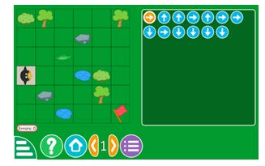

Activity 4
Finding the logic
Name of the game:Path decoding
Goal:To guide Tux through the journey to reach the flag
Duration:20 minutes
Requirements:Desktop computer, laptop, tablet or mobile phone installed with the game
Instructions
1. Tap the squares on the grid to move Tux, following the arrows that show the right path.Figure 4 shows a path decoding game.
2. Keep in mind that the arrows always guide you in the direction:↑ means up, ↓ means down, ← means left, and → means right, no matter which direction Tux is facing.Figure 4 shows a path decoding game.

Figure 4: Path decoding game